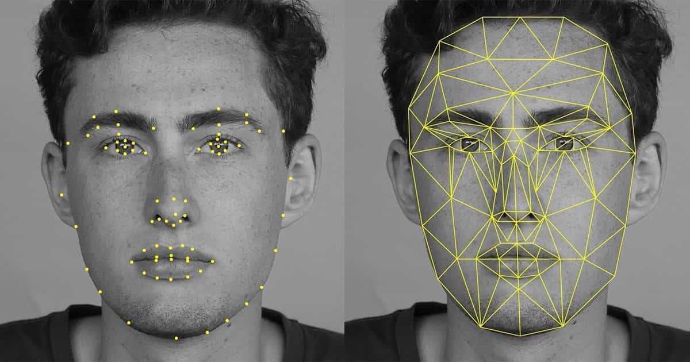
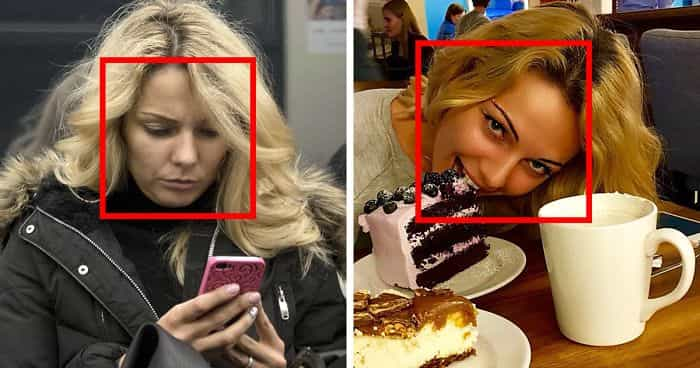

Facebook just got one step closer to becoming the literal embodiment of its name. On Tuesday, the company announced it’s rolling out several new facial recognition features on its platforms. Once you agree to let Facebook use your face data, you gain access to new tools the company says will help protect your privacy and block catfishing attempts.

In a blog post, the company described the new features that will soon be available to users who turn face recognition on with “a simple on/off switch”:
- Facebook will alert you when photos of you are uploaded, even if you haven’t been tagged in them. This happens even if you aren’t friends with the person who uploaded the photo, so long as you’re included the audience group specified by the uploader’s privacy settings.
- Facebook will alert you if your face is included in a profile picture. This update is aimed squarely at preventing catfishing and “revenge porn” style attacks, where someone creates a fake profile using intimate photos of a person without their consent.
- Finally, visually impaired users can now hear aloud who’s tagged in photos alongside them.
The catch, of course, is that you’ll have to authorize Facebook to access, store, and then match your face data with uploads across the site.
Privacy experts balk at the idea of giving face data to enormous companies like Apple and Facebook, but the social media company has recently moved to further incorporate images of users into their security measures. Throughout 2017, Facebook users have reported being asked by the site for selfies to verify their accounts after suspicious activity was detected. And just last month, Facebook piloted a program in Australia that would essentially block uploads of revenge porn—provided you send the images to Facebook first.
So let’s be clear: Facebook has set up new privacy and security schemes that would guzzle up even more face data. The company should similarly scale up its transparency efforts and be even more forthcoming, particularly if this is being done to protect people from having their photos abused, as Facebook claims.

As part of today’s announcement, Facebook published a blog post titled “Hard Questions: Should I Be Afraid of Face Recognition Technology?” featuring the above video. Neither, however, mentioned the ongoing lawsuit against Facebookover its handling of user’s faceprints. Facebook is currently fighting off a class action suit in Illinois that argues the company violated the state’s Biometric Information Privacy Act. BIPA sets a certain threshold of transparency from companies that collect and store biometric data. Facebook, the suit alleges, doesn’t meet the threshold because it hasn’t full disclosed its intentions.
Adam Harvey, a counter-surveillance expert infamous for his anti-recognition makeup, spoke to Gizmodo back in October about Facebook’s push to integrate face data into authentication.
“When any information is co-opted for security purposes it becomes less secure to share,” Harvey said. “For example, sharing your mother’s maiden name online would not be a good idea. Likewise, Facebook’s proposed facial recognition product would make sharing your face online a security issue, even more so than it already is.”